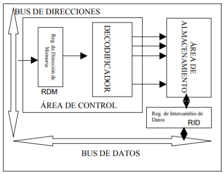

Estructura de la memoria RAM
La RAM es un dispositivo destinado a almacenar 2 tipos de información: el programa y los datos que lo manejan. La Unidad de Control los manipula.
El esquema general de una RAM:

El área de control localiza la posición de memoria que se corresponde con la dirección que se envía por el bus de direcciones. Consiste en un RDM y un Decodificador.
El área de almacenamiento está formada por una matriz de celdas con valores binarios modificables cuyo valor se transmitirá al RIM cuando la fila se activa para una operación de lectura. Cuando la operación es de escritura, el proceso es al revés.
Todas las operaciones de lectura y de escritura están dirigidas por la Unidad de Control.
- En una operación de lectura se efectúan los siguientes pasos:
- En el RDM se almacena la dirección de memoria de la celda que contiene la información.
- El Decodificador selecciona la dirección contenida en el RDM y carga en el RIM la información contenida en esa celda.
- Transfiere el contenido del RIM al registro de la CPU para su proceso.
- En una operación de escritura, se efectúan los siguientes pasos:
-
Los datos a escribir en la memoria, procesados por la CPU, llegan al RIM
- En el RDM está la dirección de la celda destino de la información
- El Decodificador selecciona la celda destino y carga el contenido de RIM a la celda apuntada por el RDM.
En la memoria principal cada celda se implementa mediante un minúsculo condensador.
El parámetro que describe la funcionalidad de la memoria es su tamaño y los parámetros que mejor miden el rendimiento son:
- La latencia: mide el tiempo que pasa desde que el chip recibe la dirección de una celda hasta que devuelve el dato contenido. Se puede medir como tiempo de ciclo.
- Ancho de Banda: cantidad de información, expresada en bytes, que se puede enviar entre la Memoria Principal y la CPU por unidad de tiempo.
- Ancho de banda del bus: ancho de bus * frecuencia del funcionamiento.
- Fiabilidad: son bits de información adicionales que permiten detectar errores producidos durante el proceso de L/E de la memoria. Se denominan bits de paridad y hay 2 tipos:
- Par. Se asocia normalmente con un byte de datos, y se complementará en la pantalla de datos con un 0 o un 1 de manera que la información tenga siempre un número par de 1s.
- Impar. Todas las palabras resultarán con un número impar de 1s.
Cuando se encuentra con una palabra que no cumpla con la convención utilizada, se detecta un error y se pide una nueva lectura del dato de la memoria.
Con este sistema solo puede detectarse un número impar de errores, ya que cuando se produce un número par de errores, el dato erróneo se camufla como correcto.
- Memoria ECC. (Código de Corrección de Errores). Las memorias que poseen esta característica son capaces de reconocer y corregir errores internos. En casos muy graves, el PC puede detenerse por completo. Estas memorias suelen emplearse en servidores por su fiabilidad.